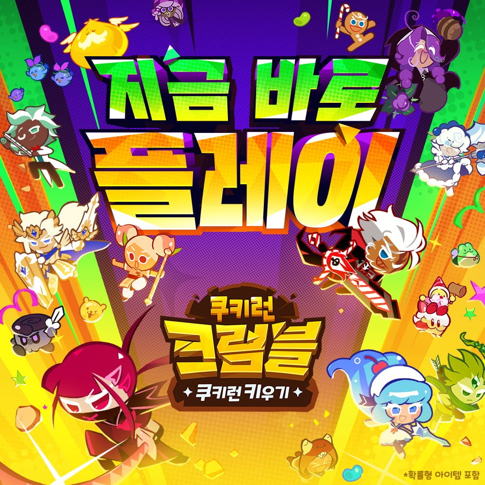

쿠키런 크럼블 등급표 총정리! 초반엔 뭐부터 키워야 할까
쿠키런: 크럼블이 어제(7월 30일) 정식으로 문을 열었죠. 등급표부터 찾아보시는 분들이 많을 것 같아서, 저도 아직 계정만 만들어둔 참이지만 공식 발표랑 매체 프리뷰 기준으로 등급 체계랑 초반 육성 순서부터 먼저 정리해볼게요. 게임 소개랑 출시 소식은 이전 글에서 이미 다뤘으니, 이번엔 등급표랑 초반에 뭘 먼저 키워야 할지에만 집중해볼게요.
쿠키런 크럼블 등급, 몇 단계로 나뉘나요?
쿠키런: 크럼블의 쿠키 등급은 커먼(C)부터 트랜센던트 슈퍼 스페셜 레어(TSSR)까지, 총 6단계로 나뉘어요. 펫도 비슷한 등급 체계로 알려져 있어요.
| 등급 | 풀네임 |
|---|---|
| C | 커먼 |
| U | 언커먼 |
| R | 레어 |
| SR | 슈퍼레어 |
| SSR | 슈퍼 스페셜 레어 |
| TSSR | 트랜센던트 슈퍼 스페셜 레어 |
등급이 하나씩 올라갈수록 손에 넣기가 까다로워지는 구조라고 보시면 되는데, 조금 특이한 부분이 하나 더 있어서 이어서 짚어볼게요.
등급 태그가 실제로 어떻게 표시되는지 보여주는 자리예요
얼터너티브·레전더리는 좀 다르더라고요
표로 보면 C-U-R-SR-SSR-TSSR 여섯 단계가 기본 줄기고, 그중에서도 TSSR 쪽에 얼터너티브(Alternative)·레전더리(Legendary)라는 특별한 계열이 하나 더 붙어 있어요.
- 얼터너티브 — 기존 쿠키런 시리즈에서 크게 활약 못 했던 낮은 등급 쿠키를 TSSR급으로 재해석한 계열이에요. 오븐방랑자 쿠키(원래 C등급이었던 용감한 쿠키의 얼터너티브 버전)가 출시 시점에 실제로 만날 수 있는 얼터너티브 예시예요. 브라이트시커 쿠키·레디베리 쿠키는 나중에 업데이트로 추가될 예정이라고 해요.
- 레전더리 — 바람궁수 쿠키가 해당하는 최상위 특수 등급이에요.
오래전부터 쿠키런을 봐온 분들이라면, 예전엔 존재감 없던 쿠키가 얼터너티브로 화려하게 부활하는 걸 보는 재미도 있을 것 같더라고요.
지금 확인되는 쿠키부터 짚어볼게요
등급을 글자로만 보면 잘 안 와닿으니까, 실제 쿠키 이름으로 짚어볼게요.
- C등급 — 용감한 쿠키·딸기맛 쿠키·마법사맛 쿠키. 시리즈 초창기부터 함께해 온 원년 멤버들이에요.
- SSR등급 — 뱀파이어맛 쿠키·다크초코 쿠키·슈크림맛 쿠키·크림소다맛 쿠키.
이 중 크림소다맛 쿠키는 출시 후 7일 연속 출석만 하면 확정으로 지급되는 쿠키더라고요. SSR인데 뽑기 운 없이 그냥 받을 수 있는 거라, 초반 전력에 은근히 큰 도움이 될 것 같아요.
다만 U·R·SR 세 등급에 어떤 쿠키가 들어가는지는 아직 확인이 안 돼요. 공식 페이지에도 등급별 쿠키 목록은 따로 올라와 있지 않더라고요(2026.07.31 기준). 이 부분은 도감을 직접 열어보고 채워서 다시 정리해볼게요.

출시 기념으로 공개된 쿠키 로스터 이미지예요. 다양한 쿠키가 한눈에 보여요
이미지 출처: 게임톡 - 쿠키런: 크럼블 정식 출시 기사 · 네이버 본문엔 받아서 재업로드 권장
이 등급표, 성능 순위는 아니에요
쿠키런: 크럼블의 등급표는 얼마나 희귀하게 얻는 쿠키인지를 나눈 분류일 뿐이지, 어떤 쿠키가 전투에서 더 센지를 매긴 성능 순위가 아니에요. 여기서 헷갈리기 쉬운 부분이라 짚고 갈게요.
실제로 SSR 등급인 크림소다맛 쿠키가 출석 7일이면 누구나 확정으로 받을 수 있는 것만 봐도, 등급이 곧 '희귀함=무조건 강함'을 뜻하진 않는다는 걸 알 수 있어요. 국내 매체에는 아직 S·A·B 같은 성능 기준 순위가 따로 안 나왔더라고요. 해외에는 이미 나온 곳도 있다지만 출시 다음 날이라 아직 초기 추정에 가까워서, 이 글에서는 공식 등급(레어도) 기준으로만 정리해볼게요.
스킬 말고 시너지도 있다는 거, 알고 계셨어요?
쿠키런: 크럼블은 등급·스킬 말고도 쿠키마다 '시너지'라는 요소를 따로 갖고 있어요.
매체 프리뷰에 따르면 시너지는 조합 상대에 따라 방향이 나뉘어 있어서, 전투력 높은 쿠키만 잔뜩 모은다고 능사가 아니라 조합을 같이 고려해야 한다고 해요.
| 구분 | 역할 |
|---|---|
| 주는 쿠키 | 시너지 효과를 다른 쿠키에게 건네주는 쪽 |
| 받는 쿠키 | 그 시너지 효과를 넘겨받아 쓰는 쪽 |
메인으로 밀 쿠키를 하나 정하고 그 주변을 시너지로 채우는 식으로도, 반대로 시너지 연결 자체를 촘촘하게 짜는 식으로도 파티를 구성할 수 있다고 하더라고요.
그래서 초반엔 뭐부터 키워야 할까요?
쿠키런: 크럼블 초반 육성은 확정으로 주는 쿠키 → 시너지가 걸리는 쿠키 → 얻기 쉬운 등급 순으로 잡으면 헷갈리지 않아요. 등급이 높다고 무작정 먼저 키우는 것보다 이 순서가 안전하거든요.
- 1순위 — 확정으로 주는 쿠키부터. SSR 크림소다맛 쿠키처럼 등급과 상관없이 뽑기 운 없이 100% 받는 쿠키는 무조건 먼저 키우는 게 맞아요. 이미 손에 들어온 자원이라 투자 대비 손해 볼 일이 없거든요.
- 2순위 — 시너지가 걸리는 쿠키. 위에서 짚은 시너지 구조상, 내가 가진 쿠키랑 주고받는 관계에 있는 쿠키는 등급이 낮아도 파티 전체 화력에 보탬이 될 수 있어요.
- 3순위 — 얻기 쉬운 등급부터. C·U처럼 상대적으로 손에 넣기 쉬운 등급을 기본 라인업으로 먼저 채워두면, 나중에 SSR·TSSR을 뽑아도 자연스럽게 교체·보강하는 흐름으로 갈 수 있어요.
성능 티어가 아직 정립되지 않은 지금은, 확정 지급·시너지·획득 난이도 이 세 가지가 초반 육성 순서를 잡는 가장 현실적인 기준인 것 같아요.
자주 묻는 질문
Q. 쿠키런: 크럼블은 어느 스토어에서 받을 수 있나요?
공식 페이지 기준으로 구글 플레이·앱스토어·갤럭시 스토어·원스토어 네 곳에 모두 올라와 있어요. 쓰시는 기기에 맞는 곳에서 받으시면 돼요.
Q. 쿠키 시너지는 어디서 확인할 수 있나요?
인게임 쿠키 상세 정보 화면에서 쿠키별로 '주는 쿠키·받는 쿠키' 관계를 확인할 수 있어요. 메인으로 밀 쿠키 하나를 정해두고, 그 쿠키와 시너지가 걸리는 쿠키들을 같이 육성하면 감 잡기가 한결 쉬워요.
쿠키런 크럼블 등급표 정리
확실한 건 하나예요. 쿠키런: 크럼블 등급은 C-U-R-SR-SSR-TSSR 6단계에, 얼터너티브·레전더리라는 특별 계열이 더해진 구조고요. 이 등급표는 성능 순위가 아니라 희귀도 분류라는 것만 기억해두시면 헷갈릴 일이 없을 것 같아요. 초반에는 확정 지급 쿠키부터, 그다음 시너지·획득 난이도 순으로 육성 순서를 잡아보시면 좋을 것 같습니다. 저도 직접 접속해서 키워보고, 성능 순위까지 포함한 실제 후기로 다시 찾아올게요.
✔ 쿠키런 크럼블 같이 보기 좋은 내용
사전예약 소식을 다룬 '쿠키런 크럼블 사전예약 시작! 방치형 쿠키런 키우기 첫인상 정리'랑, 출시일이 확정됐을 때 정리한 '쿠키런 크럼블 7월 30일 출시 확정! 사전등록 180만 보상 총정리' 글도 참고하시면 좋아요.
참고한 곳
· 쿠키런: 크럼블 공식 페이지
· 쿠키런 키우기 - 쿠키런: 크럼블 (Google Play)
2026.07.31 기준